Many studies aim to erase concepts from diffusion models.
While these models may no longer generate images tied to the erased concept when prompted, we ask:
Is the concept truly erased? Could the model still reproduce it through other means?
Instead of analyzing a model that erased some concept by generating many images and analyzing them, we propose a method that analyzes it using latents that generate the erased concept.
Diffusion models dominate the space of text-to-image generation, yet they may produce undesirable outputs, including explicit content or private data. To mitigate this, concept ablation techniques have been explored to limit the generation of certain concepts.
In this paper, we reveal that the erased concept information persists in the model and that erased concept images can be generated using the right latent. Utilizing inversion methods, we show that there exist latent seeds capable of generating high quality images of erased concepts.
Moreover, we show that these latents have likelihoods that overlap with those of images outside the erased concept. We extend this to demonstrate that for every image from the erased concept set, we can generate many seeds that generate the erased concept. Given the vast space of latents capable of generating ablated concept images, our results suggest that fully erasing concept information may be intractable, highlighting possible vulnerabilities in current concept ablation techniques.
Starting with an image from the erased concept, we use image inversion to find a latent seed that generates the image. We explore how likely this latent is, along with the reconstruction error (PSNR) of the image using the latent and the diffusion model.
The images generated using the latents we find resemble the erased concept (as presented in the Vanilla row under Fixed Seed columns), while simple generation does not necessarily do so.
| Nudity | Church | Garbage Truck | Parachute | Tench | Van Gogh | |||||||
|---|---|---|---|---|---|---|---|---|---|---|---|---|
| Fixed Seed | Our Analysis | Fixed Seed | Our Analysis | Fixed Seed | Our Analysis | Fixed Seed | Our Analysis | Fixed Seed | Our Analysis | Fixed Seed | Our Analysis | |
| Vanilla | 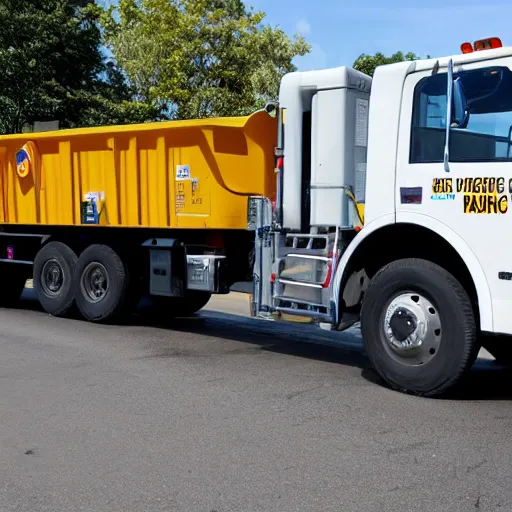 | 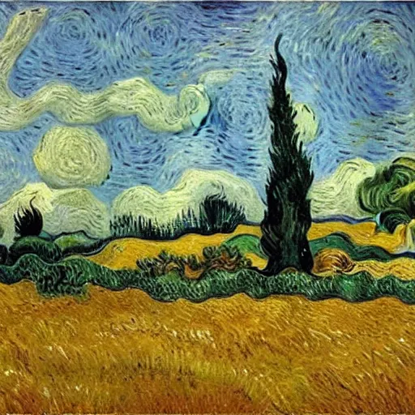 | ||||||||||
| EraseDiff | 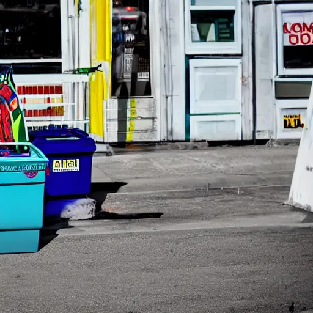 | |||||||||||
| ESD | 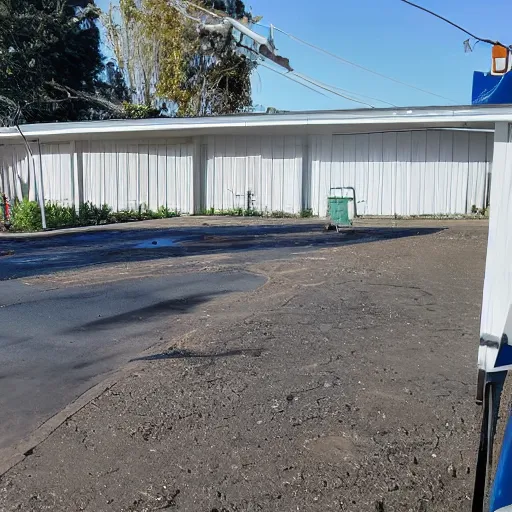 | 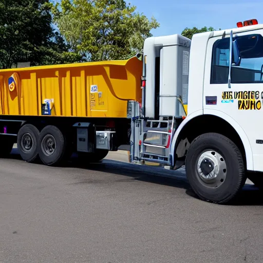 | 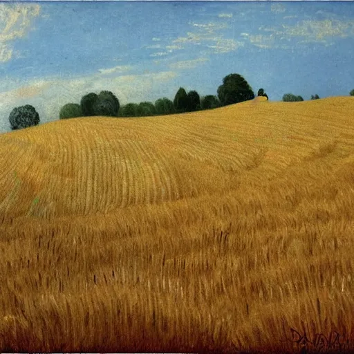 | 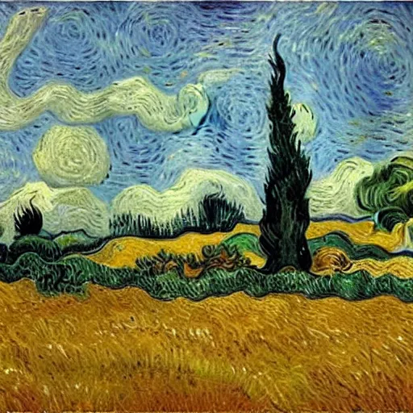 | ||||||||
| AdvUnlearn | 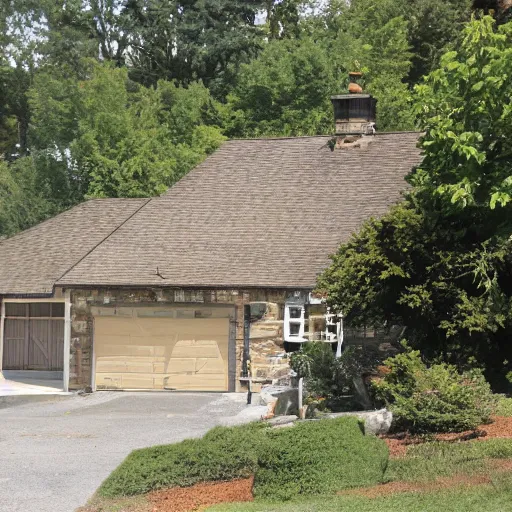 | 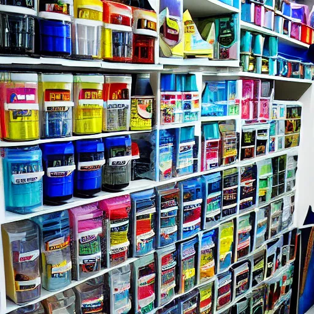 | 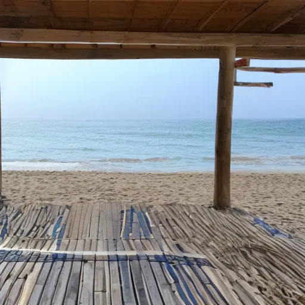 | |||||||||
| SPM | 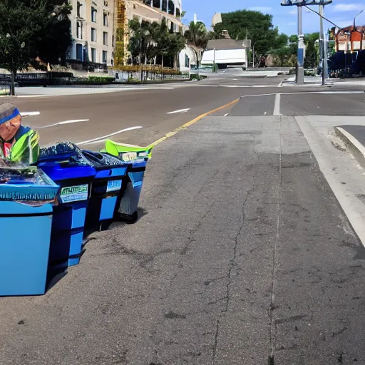 |

|
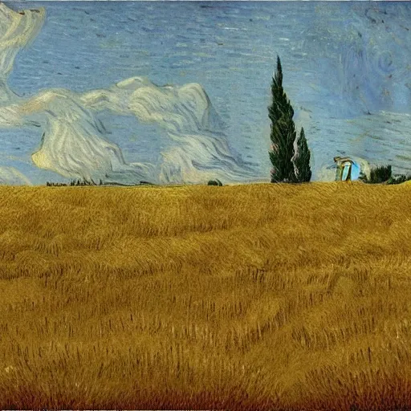 | |||||||||
| Salun | 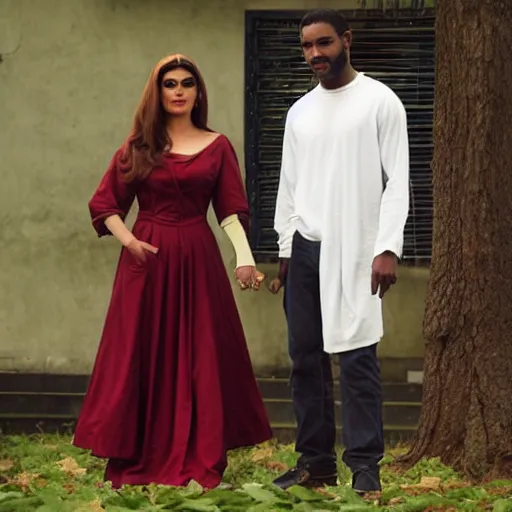 | 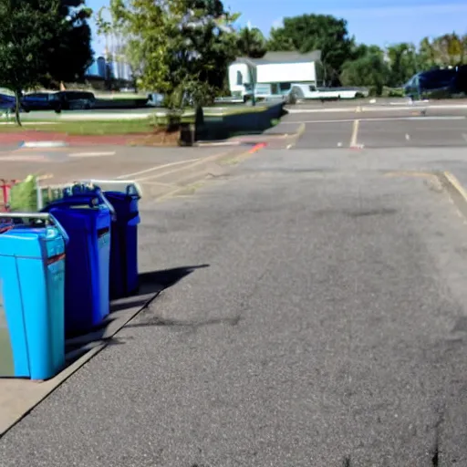 | ||||||||||
| Scissorhands | 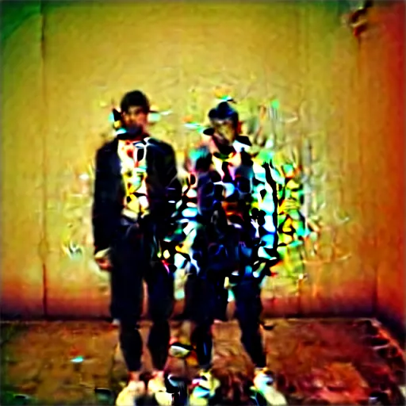 | 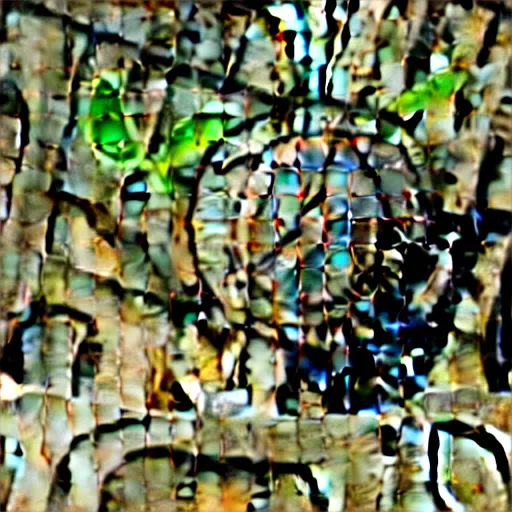 | 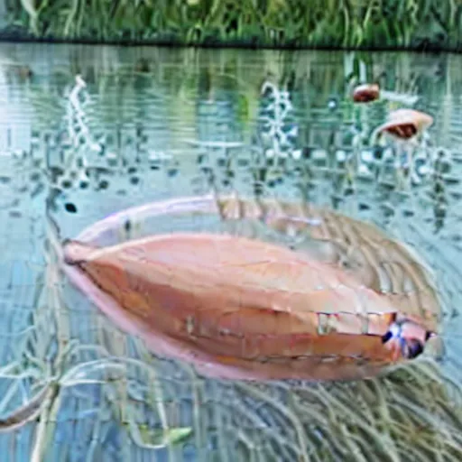 | 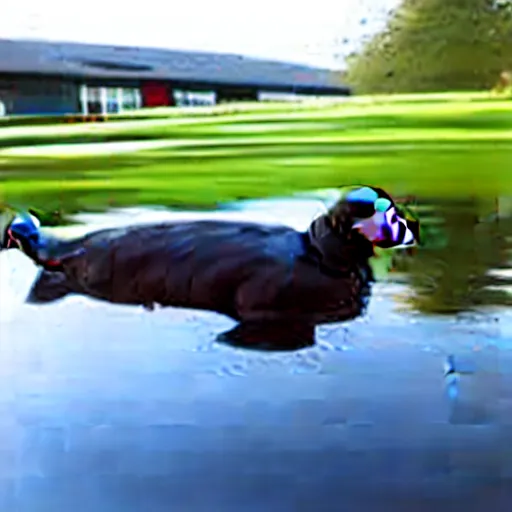 | ||||||||
| FMN | 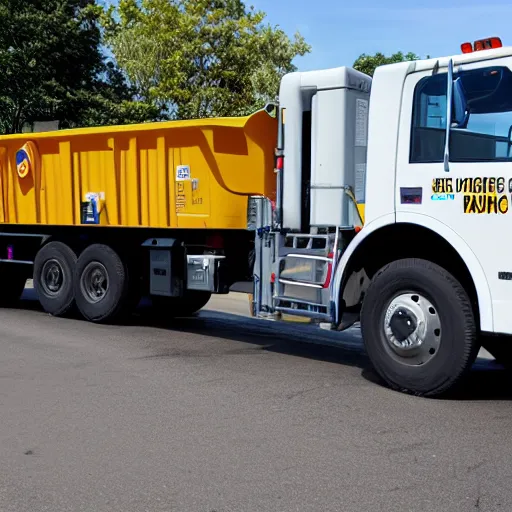 |

|
||||||||||
| UCE | ||||||||||||
| AC | 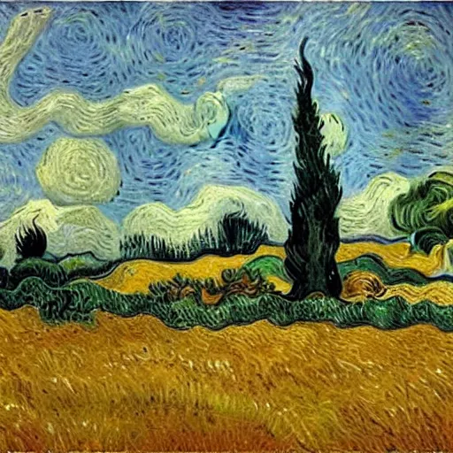 | |||||||||||
We can also retrieve multiple distant latents that can generate a given image. This is done by inverting the diffusion model's decoder with different initializations (using arbitrary non erased images \( \mathcal{I}_{s_i} \)) before we perform image inversion.
@misc{rusanovsky2024memoriesforgottenconcepts,
title={Memories of Forgotten Concepts},
author={Matan Rusanovsky and Shimon Malnick and Amir Jevnisek and Ohad Fried and Shai Avidan},
year={2024},
eprint={2412.00782},
archivePrefix={arXiv},
primaryClass={cs.CV},
url={https://arxiv.org/abs/2412.00782},
}